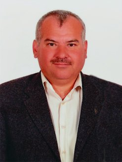

Kemal Fatih Kurşun
Mutfak sanatlarına adanmış 27 yıllık gurur dolu bir meslek hayatının ardından emekliliğe ayrılan Şef Kemal Fatih Kurşun, çeyrek asrı aşan bu süreçte otellerden öğrenci yurtlarına kadar geniş bir yelpazede lezzet ve toplu yemek hizmetlerine liderlik etmiştir.
Uzun yıllara dayanan deneyimi boyunca edindiği en temel ilke, sofraya sunulan her bir lokmanın lezzeti kadar güvenilirliği olmuştur. Kendisi ve ailesi başta olmak üzere, Silifke halkının helal gıda ve temiz mutfak konusundaki hassasiyetlerini göz önünde bulunduran Şef Kemal Fatih Kurşun, Nisan 2025'te kapılarını açan Şef Kurşun Restoran'ı hayata geçirmiştir.
Amacımız; lezzeti, hijyeni ve helal et hassasiyetini samimi bir esnaf ustalığıyla harmanlayarak siz değerli misafirlerimize her ziyaretinizde pürüzsüz ve güvenilir bir yemek deneyimi sunmaktır.